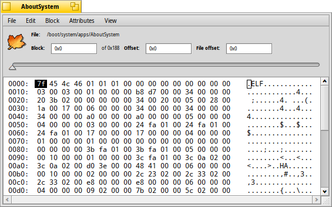

DiskProbe
DiskProbe
| Deskbar: | ||
| 場所: | /boot/system/apps/DiskProbe | |
| 設定ファイル: | ~/config/settings/DiskProbe_data |
DiskProbe はファイルやデバイス上のデータをバイトレベルで観察、変更する 16 進エディターです。大変低レベルのツールなので、気を付けないとめちゃめちゃになってしまう可能性があります！
DiskProbe を起動すると、最初にファイルかデバイスのどちらで作業するか求められるでしょう。その後、次のようなインターフェースが表示されます。

メインビューは常に 1 つのブロックのデータを示しています。 でそのサイズを調整できます。左には、ブロックの始まりからのオフセット、中央には、データの 16 進での表示が、右には ASCII シンボルでの表示があります。
上にあるスライダーまたは、ALT ←、および ALT → を使って、ブロックからブロックへと移動できます。また、TAB を使って 16 進と ASCII コラムを切り換えられます。
は、選択部分を異なるエンディアン (および異なる基数) で表示するだけでなく、ジャンプするブロックへのオフセットとして選択部分を計算します。位置がファイル / デバイスの外にあると、それは灰色になります。
ファイルシステムを調べるほとんどの場合、これは便利な特徴です。それは、しばしばほかのブロックへのポインタを含むからです。
調べているファイルが属性を含む場合、 メニューを使用して新しい DiskProbe ウィンドウで開き、そこですべての属性を開けます。以下は、AboutSystem アプリケーションの SYS:PACKAGE 属性です。

Raw エディター (Raw Editor) は常に表示されますが、それに加えて属性の種類に応じて異なるエディタータブが表示されます。たとえば、文字列および MIME タイプ用のエディターや、ベクターアイコン属性用のアイコンビューワがあります。